Pic di Babe
NUOVO
Salita via Costa Bula; discesa per cengia Sud del Cuel di Lanis
Direttissima in versante Sud: è la morfologia stessa del monte, con il pratone di Costa Bula che sale e man mano si restringe, a suggerire la via di salita.
Il problema di scrivere questa pagina più di due anni dopo l'escursione è che ormai l'entusiasmo a riguardo l'ho perso: mi fa quasi sorridere ora, ma quanto ho sognato questa salita, a forza di vederla da Udine!
Làschiplas dallo slavo laški 'friulano' + plâz 'slavina' (da Cinausero Hofer - Dentesano, Oronimi del Friuli).
Avvicinamento via Pradielis, con dietro il massiccio del Postoucicco.
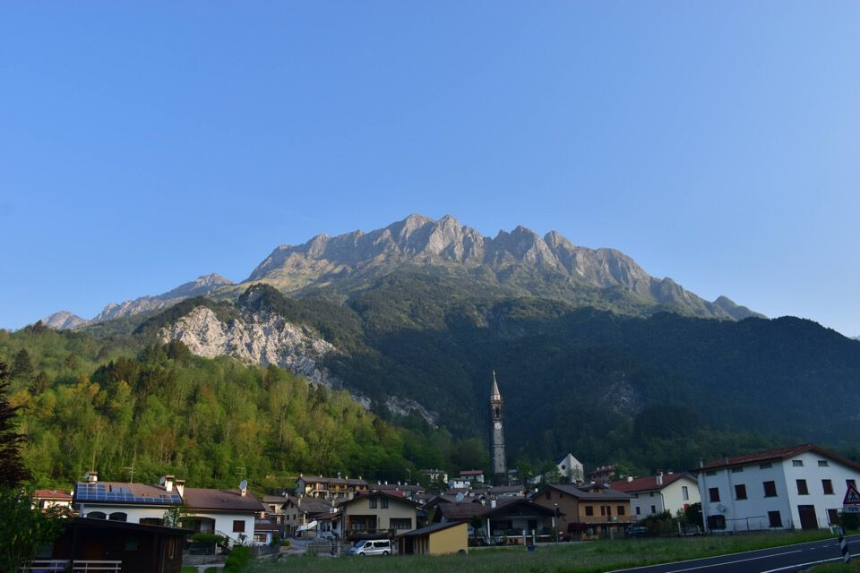Si vede già bene la Costa Bula: preoccupa un po' la questione dell'uscita in cresta.
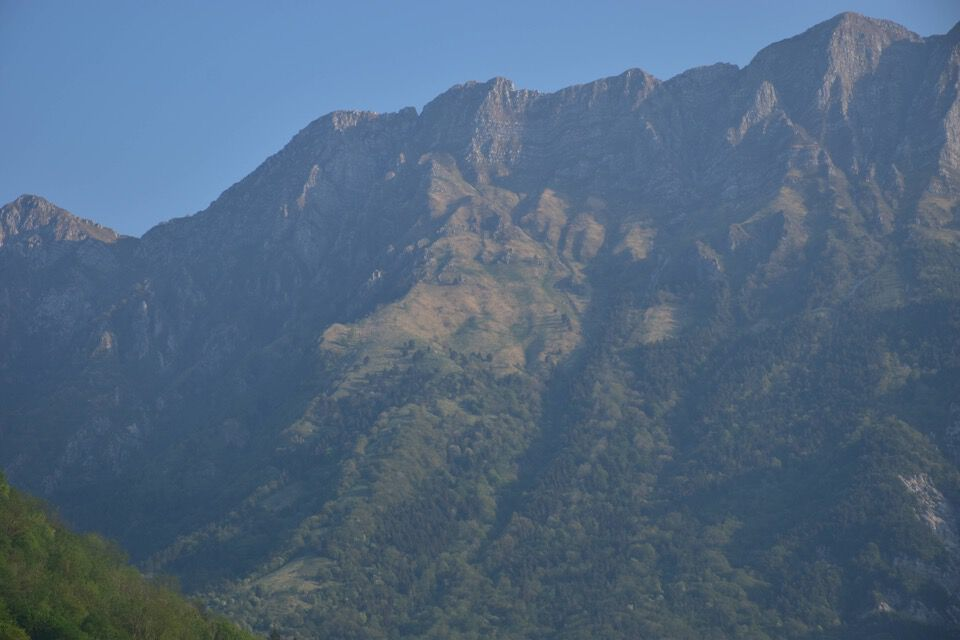Forcella Dolina, da cui sono passato la seconda volta che ho percorso la AVCG. Deve essere interessante il percorso di cresta dei monti Sorochiplàs e Iéduza (ma credo che ci si possa salire anche per canaloni boscosi da Sud).
Abbandono il CAI 729 per iniziare a rimontare i pratoni di Costa Bula.
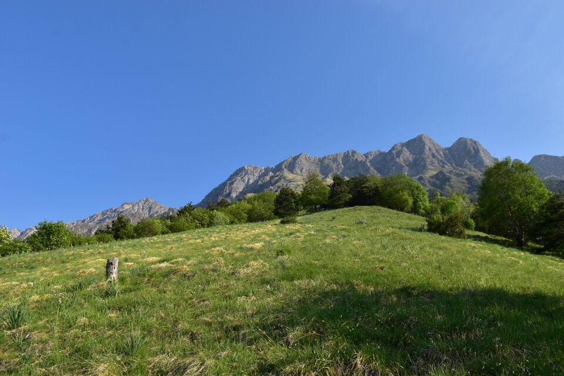La Vualbìne del Cjampón.
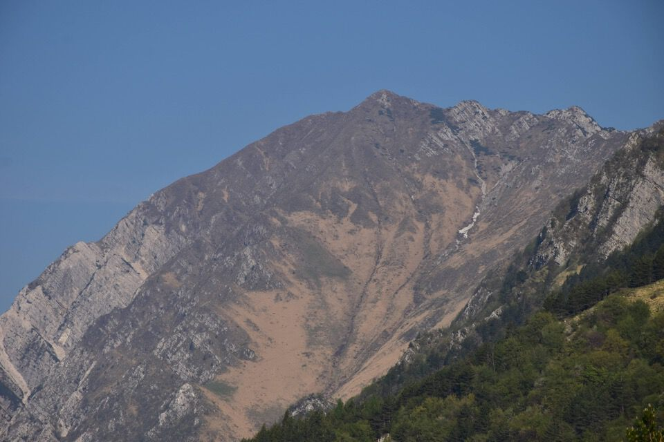Ad una certa incontro la mulattiera costruita negli anni '60 per effettuare il rimboschimento sui versanti Sud del Cuel di Lànis: si trova il tracciato sulla mappa CTR. Altre due mulattiere sono presenti sopra Pers, quelle che al giorno d'oggi, grazie al lavoro di Tiziano Cher, costituiscono i sentieri della Lopata e del rio Gleria, e di cui i sentieri segnati in nero e "dritti" sulla Tabacco sono una ridicola approssimazione.
A detta degli abitanti questo rimboschimento non è ben riuscito, a differenza di quello attuato negli anni '30 a Gemona sul versante Sud dell'Ambruséit (cioè fra la Cueste Gringjone e il Cjampón).
Il Cuarnan col versante che dà sul Vedronge.
Ormai è quasi fatta: hai visto che bella traccia?
Laggiù Cesariis.
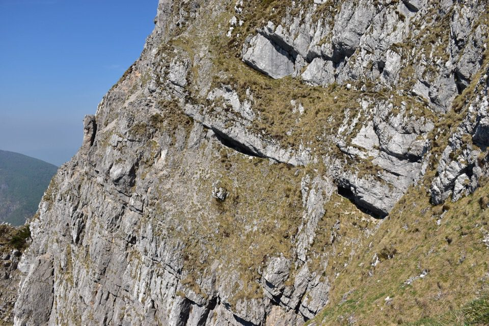 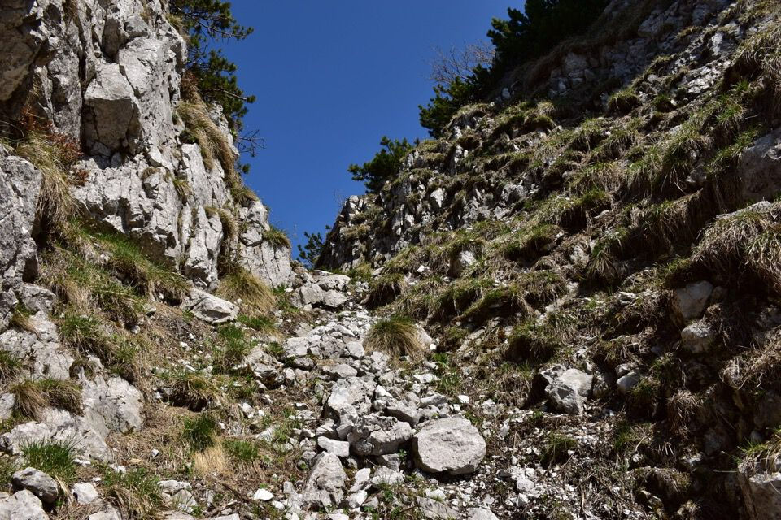La forcellina d'uscita.
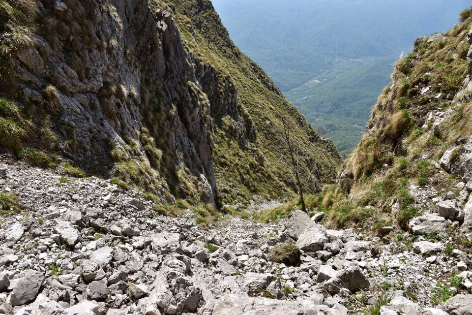Dalla cima del Làschiplas verso il Postoucicco...
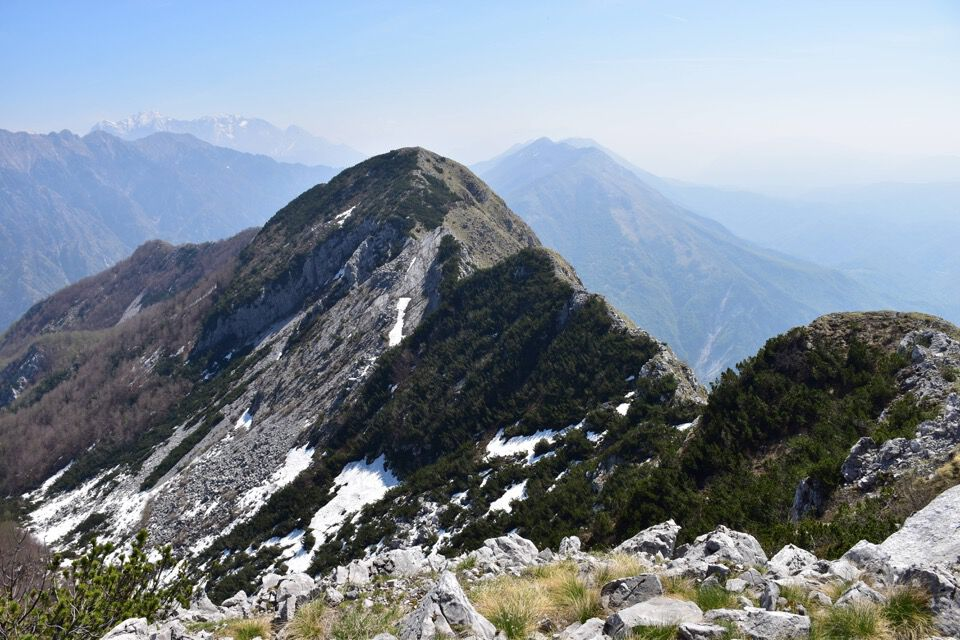...e verso il Cuel di Lànis. Che bella che è la conca di Tasaòro.
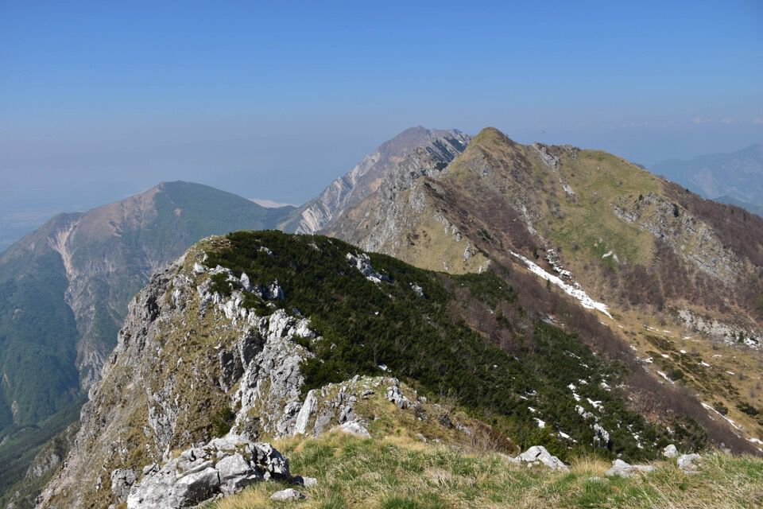Proseguo verso il Cuel di Lànis: già una volta avevo osservato con stupore quell'evidentissima traccia che inizia dalla forcella, e questa volta la curiosità è stata troppo forte. Si va a provare!
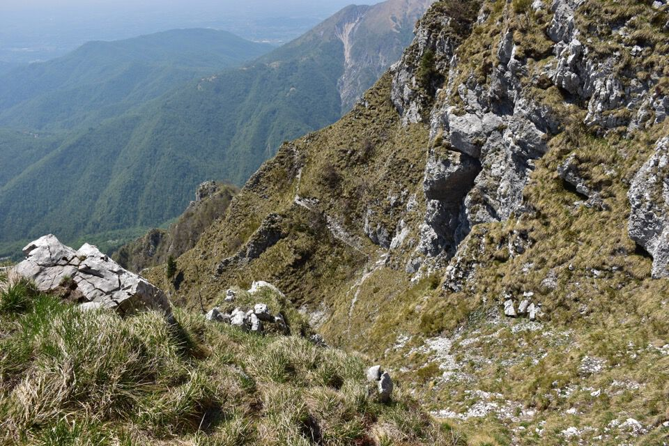L'ultimo pezzo è esposto e ho calzato i ramponi da prato.
Ma eccomi sui pendii a Sud del Cuel di Lànis: ormai la questione è piuttosto semplice.
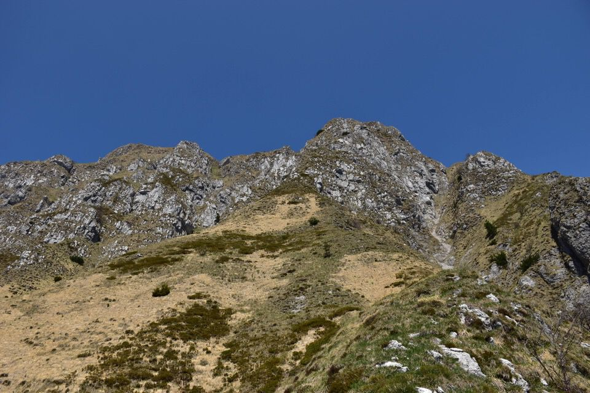
In centro il piccolo torrione (punto di riferimento) della foto precedente, su cui sono ridicolmente salito con un passaggio atletico.
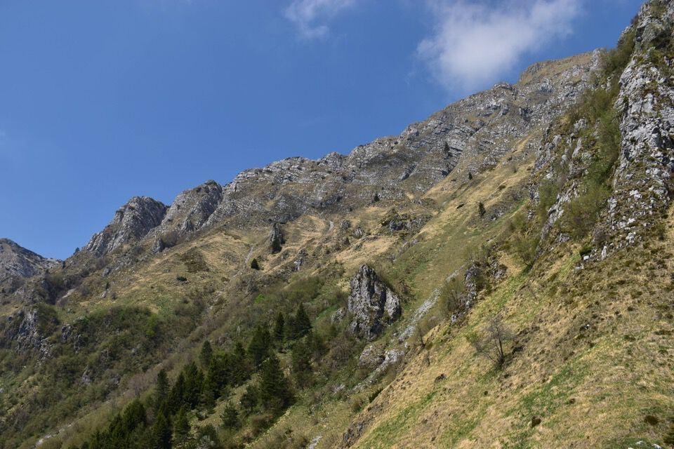Giù fino ad intercettare la mulattiera della Lopata, in ombra e rilassante.
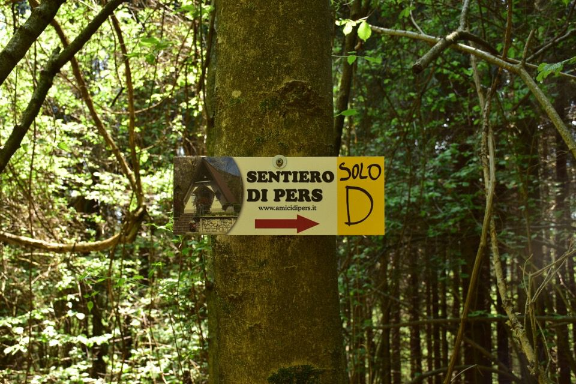Lassù la Siroche Gjaline e l'impluvio del rio Gleria, da cui scenderò qualche mese più tardi con Lisa.
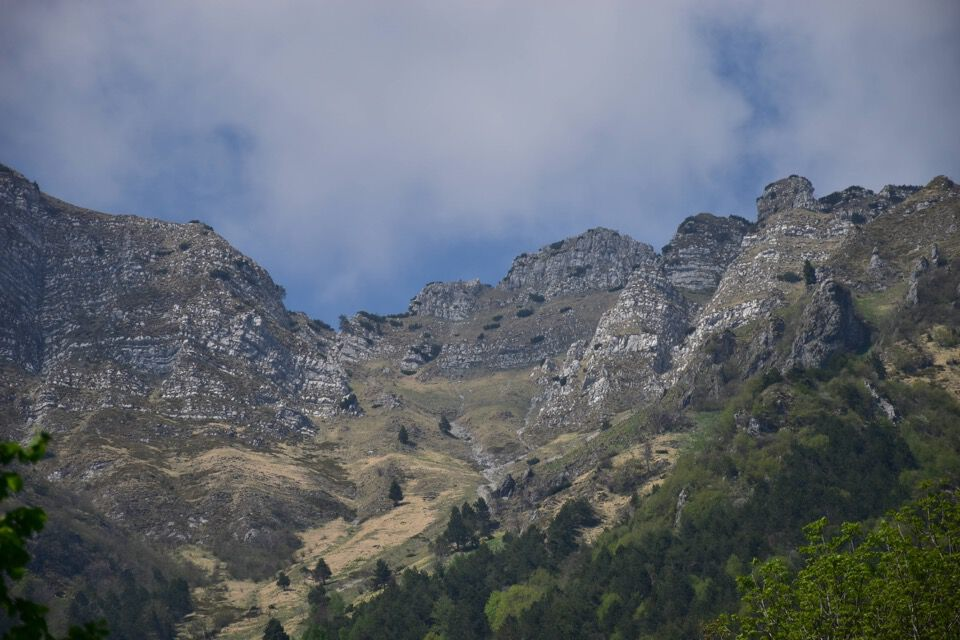Ormai a valle vedo il percorso fatto: la gran sella fra Cuel di Lànis e Làschiplas è quella da cui parte il sentiero di bestie che ho seguito per portarmi sui pendii a Sud del Cuel di Lànis.